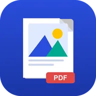
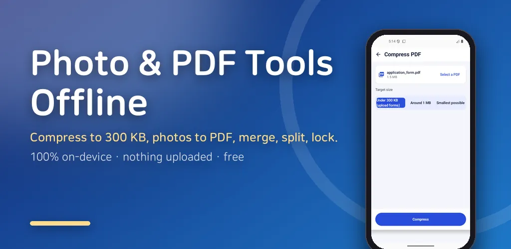
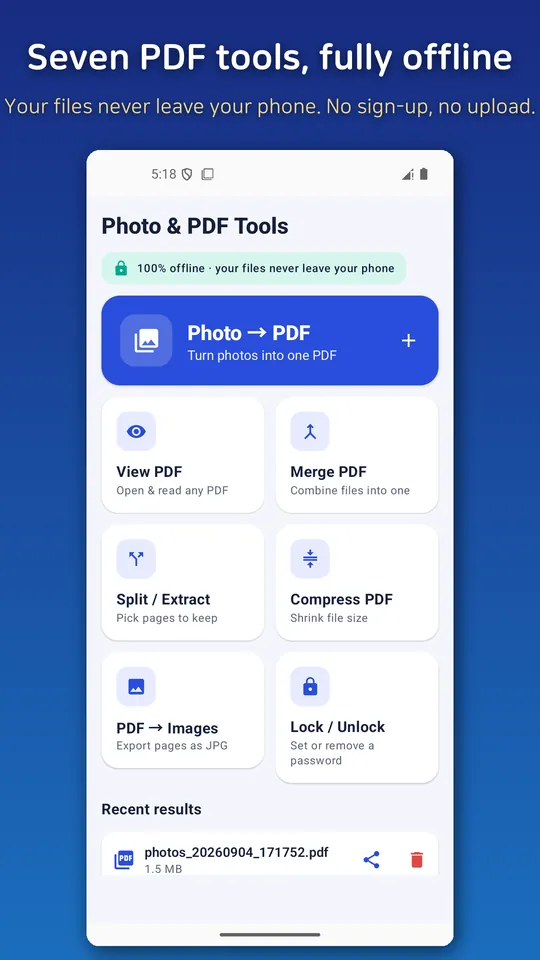
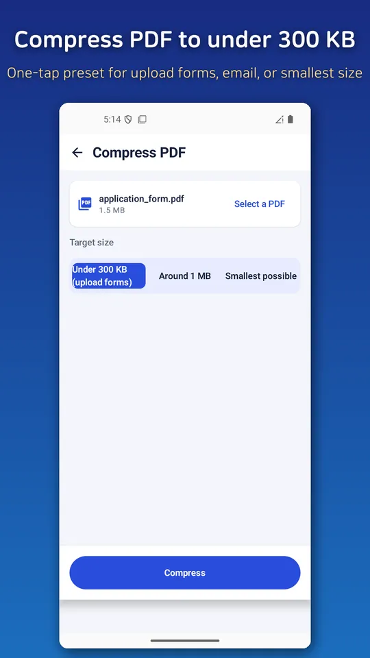
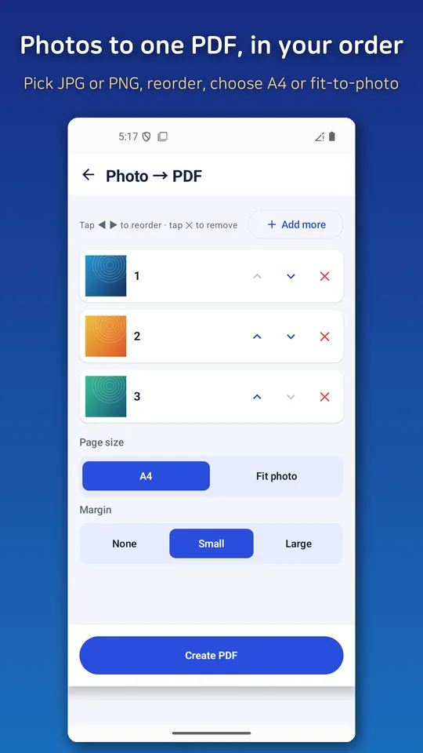
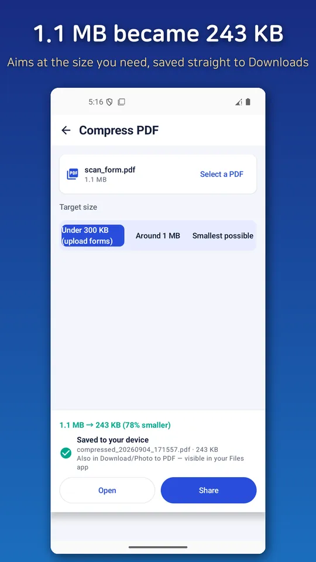

Merge PDF Compress: JPG to PDF
Merge and compress PDF, convert JPG photos to PDF offline. No watermark.





About this app
Turn photos and images into PDF, then view, merge, split, and compress PDFs — every PDF task in one app. Everything happens on your phone. Your files are never uploaded to a server, no sign-in is required, and there is no watermark on your output.
▼ What you can do
- 📷 Photo/Image → PDF: Pick multiple images at once and combine them into a single PDF. Great for documents, notes, receipts, and forms.
- 📄 PDF viewer: Open and read PDFs instantly — including PDFs you receive via KakaoTalk or email.
- 🔗 Merge PDFs: Combine several PDFs into one, in order.
- ✂️ Split / extract pages: Cut out just the pages you need or save them separately.
- 🗜️ Compress PDF: Shrink file size for easy sending and uploading — with an "under 300KB" preset to fit form-submission limits.
- 🖼️ PDF → images (JPG): Export PDF pages as JPG images and save them straight to your Gallery.
- 🔐 Lock / unlock PDFs: Set or remove a password — also processed entirely on your device.
- 🌙 Night mode + last-page memory in the viewer: read comfortably in the dark and reopen right where you left off.
▼ Why this app — honestly free
- 🔒 Your files never leave your phone: 100% on-device processing, no cloud upload.
- 🙅 No login or sign-up: Install and use right away.
- 💧 No watermark: Your PDFs carry no app logo or watermark.
- 🚫 No subscription, no fake free trial: No auto-renewing plans and no bait "free trial."
- 📴 Works offline: Convert and edit without an internet connection.
▼ Handy when you
- Photograph documents, contracts, or notes and submit them as PDF
- Bundle several PDFs into one to email
- Need to shrink a PDF to meet an attachment limit (e.g., 300KB)
- Quickly open a received PDF and pull out only the pages you need
This is a free app supported by ads. A banner ad and an interstitial ad at save time keep the app running, and regardless of ads, your files are never uploaded anywhere.
Android · free with ads · Developer: RealTunaLove · Store listing in 17 languages
Background story: why I built it